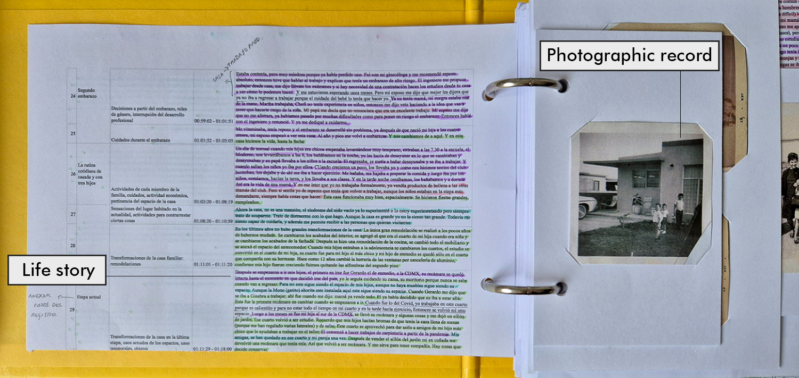
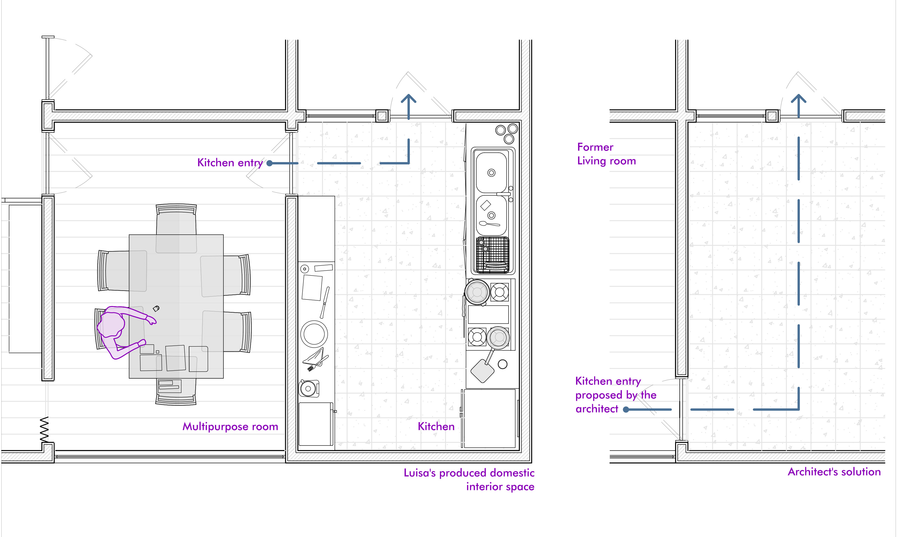
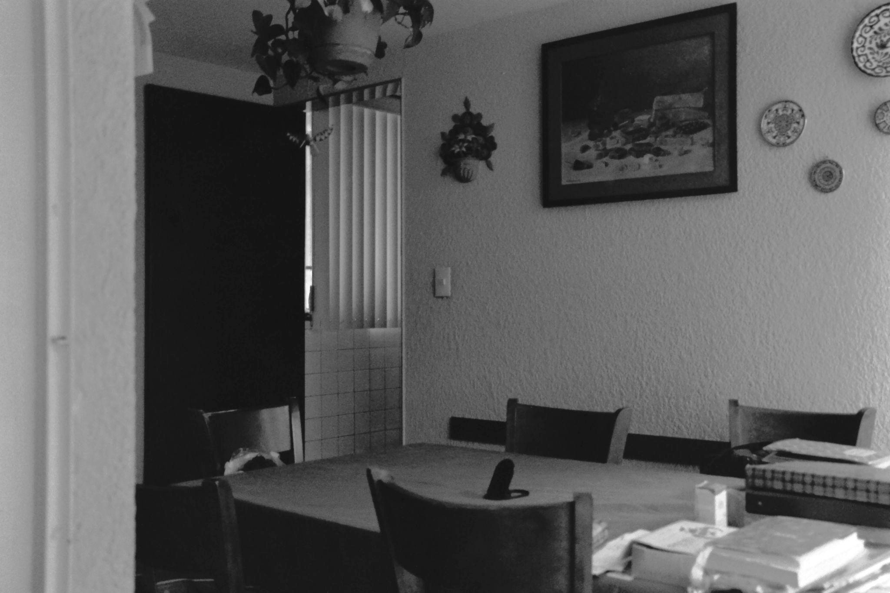
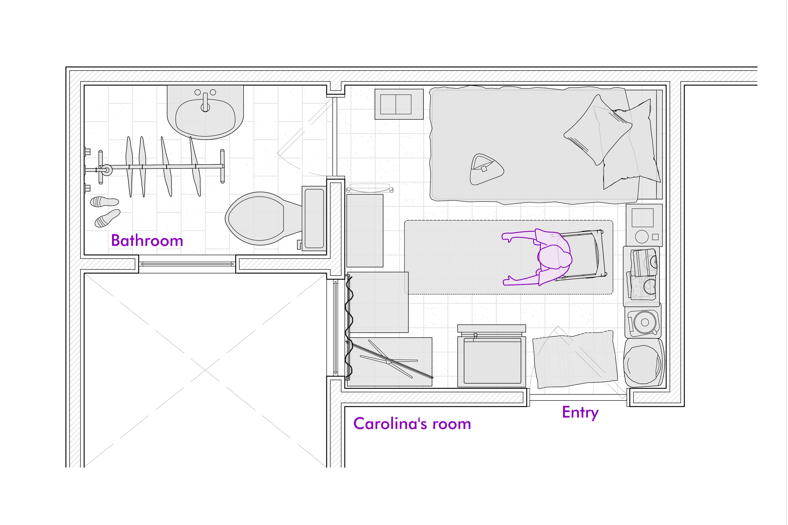
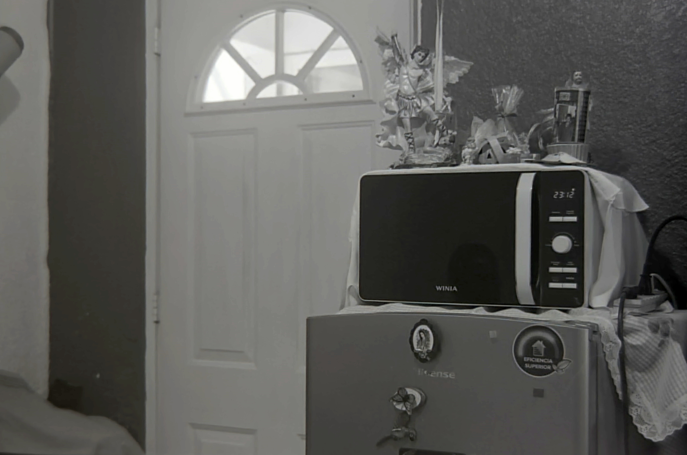
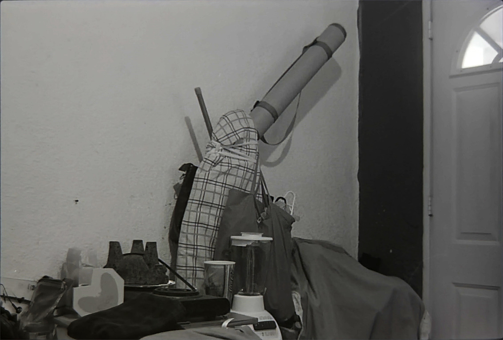

Abstract
Architecture’s approach to housing is grounded in the abstraction of space and a limited temporality that only accounts for the architectural object prior to inhabitation. This renders the everyday production of domestic space – and the subjects who produce it – invisible, unsayable and unthinkable within the discipline. Drawing on Jacques Rancière’s concept of the distribution of the sensible and Donna Haraway’s situated knowledge – understood as the critical capacity of those whom dominant regimes of visibility have rendered invisible, this article approaches the everyday production of domestic interior space through the gaze and embodied experience of women transiting through old age. Through life story narratives, it analyses the scenes in which these women produce and transform their domestic space, making visible the biases and exclusions that structure how architecture conceives and produces it. The article argues that their embodied experience constitutes a different site from which to identify dissensus and outline the contours of an architectural practice grounded in the verification of equality.
Keywords
Introduction
The everyday production of domestic space – and the subjects who produce it – remain largely invisible, unsayable and unthinkable within architecture. This may have to do with the discipline grounding its approach to housing in the abstraction of space and in a limited temporality that only accounts for the architectural object prior to inhabitation. The distribution of the sensible within the field of architecture prioritizes public space – the space associated with politics – the place where men can be citizens, where they can exercise their logos (Chueca Goitia, 1977). Instead, the house, the place of everyday life, is overlooked (Duby, Perrot and Schmitt, 1992). This silences other forms of producing and signifying space, along with the subjectivities that enact them. This is the case of women transiting through old age. In this regard, the study aims to make visible, sayable and thinkable the production of domestic interior space of these women, in order to identify other ways of producing architecture and understand its relation with everyday life. From my position, as a former interior architect, I have noticed biases within the discipline. This study, framed within my PhD research, seeks to understand the emergence of these biases and how they shape people’s everyday lives.
Philosopher Henri Lefebvre (1947) thought that the sense of life had to be worked in everyday life. He observed that philosophy did not give a proper place to everyday life, that is why he thought it needed to be theorized again. In order to achieve that he turned to literature, mainly the novel. There Lefebvre found all the cues that led him to comprehend the importance of it. Following Lefebvre’s insight, the study approaches everyday life production through life story narratives, because they are a form of literary production that relies on embodied subjective perception. They allow us to observe from a situated place the experience of women. Accordingly, it proved to be the most adequate methodological apparatus to approach everyday life production.
A situated approach makes visible the biases that guide everyday life and the roles that social subjects have to play in it, that is the distribution of the sensible. Donna Haraway (1988) insists on recognizing the embodied nature of vision in order to speak out about how the sensory system has been used to justify a vision that comes from nowhere but that is placed over everything like a totalitarian vision. Haraway invites us to reverse that epistemic convention; she defends the idea of an objectivity that acknowledges the place where it comes from, in order to be critical. Reclaiming the life stories of these women helps to start these mechanisms, bringing up front their logos1. Through everyday life scenes we can understand the distribution of the sensible that placed these women inside the house and their role in the production of space and everyday life. Starting from their experience implies acknowledging them as political subjects within the architectural field.
The methodological framework rests in the concept of the scene. To the philosopher Jacques Rancière (2018) it is a configuration which articulates the visible, the sayable and the thinkable. Its main interest is to show the thought working, how concepts operate, he is trying to oppose a philosophical tradition in which first the terms are defined, then are seen to combine and give rationality to the object. Rancière rejects this approach; he starts from the experience, instead of giving it a priori values. The scene allows a double movement, questioning the alignments between means and objectives linked to the constituted distributions and claiming knowledge without privilege (Rancière and Jdey, 2018). It is a symbolic and structural space – embodied in a singular event – where the forms of the visible, sayable and thinkable are set, that is the distribution of the sensible.
The article is composed of five parts; the first section develops the conceptual framework that serves to analyze the scenes. The next section shows the methodological framework, how the study was made, who participated and which tools were used. Afterwards the article turns to the analysis of two scenes that show us different ways of producing the domestic interior space and of its everyday inhabitation. The first one shows us a moment in which a mother questions an architectural decision on behalf of everyday life safety in the domestic space. The second shows us a woman producing her everyday life by her own parameters and means, without following preconceived ideas. And finally the article concludes with some insights to have in mind if we want an architectural practice that should aim for the verification of equality2.
Distribution of the Sensible, Production of Space and Situated Knowledges
The conceptual framework of the study is organized around two different approaches linked by a third one, the distribution of the sensible proposed by philosopher Jacques Rancière and the situated knowledge envisaged by philosopher Donna Haraway joined by Henri Lefebvre’s production of space. The first one refers to the system of sensible evidence that defines simultaneously what is visible and what is not, what has part in the common and what is left out. It is a distribution that determines who can talk (logos) and who only makes noise; who occupies certain places and who does not (Rancière, 2000). That is to say, the parts that organize the shared experience of a community, what bodies, activities and times are perceptible as part of the common world and which are not. In this sense, we could say that architecture has operated as a means of producing and reproducing a certain distribution of the sensible. Consequently, it participates in the production of everyday life, arranging, through its programs, norms and assignments, the distribution of the bodies, their visibilities and functions. From there we can understand why some things are more visible, sayable and thinkable than others. The subjects that compose the study, very often, are positioned on the invisible side, the house, everyday life, and women transiting through old age. The distribution of the sensible is not definitive, it can be suspended by the dissensus, which refers to the processes that interrupt the logic that establishes who can talk, act or be visible. The dissensus momentarily stops the distribution of the sensible and makes visible, sayable and thinkable other positions and places (Rancière, 2019).
Conceiving space as a production helps to elucidate the distribution of the sensible. Understanding space as a production allows us to see the parts that have a role in its materialization. Lefebvre (1991) elaborated a conceptual triad that is related in a dialectical way. The dimensions of the production of space are: the perceived space, which refers to everyday life experience, its materiality and the social reproduction it encompasses. The second, the conceived space, is the space of experts and scientists, of signs and management codes; it is the fragmented and restricted space. The third dimension is the space of imagination, of the symbolic, the space where inhabitants search other possibilities in the materialization of space. Architecture departs from conceived space. It is one of the disciplines in charge of the production of the space that has served the capitalist economic system. This is significant because its distribution of the sensible takes into account this dimension but denies the other two. In architectural production, the perceived and lived dimensions of space are almost always left unseen, unspoken and unthought. Making them a part of the study allows us to comprehend the complexity involved in the production of architecture.
To reveal the sensible world of these subjects, we have to approach their experience as situated – my position as a researcher, but also the positions of the women that collaborated with the study. That leads us to the second proposal. Donna Haraway (1988) insists on the importance of understanding the embodiment of vision, because it is never neutral or passive – neither in science nor in everyday perception. As Haraway argues, every act of seeing is mediated by specific technologies, contexts and ways of life that actively construct what becomes visible. There is no unbiased or totalizing view, only particular, partial and situated perspectives that organize the world in specific ways. Architecture is no exception. The discipline has presented its own way of seeing – the abstract plan, the scale model, the finished building photographed before inhabitation – as if it were a view from nowhere, objective and universal. This architectural gaze puts the everyday production of domestic space – and the women who enact it – on the invisible side. Therefore, we have to turn and see what the experience of these women tells us about the production of everyday life space and to acknowledge their experience as a legitimate and critical site for the production of knowledge.
While both authors share a common interest in questioning universal and neutral knowledge, and their approaches prove largely mutually reinforcing, certain tensions between their positions still deserve attention. For example, the fact that Rancière does not recognize a political subject leaves the door open, anyone can be that subject. Haraway insists on the singularity of the subject to observe and better understand how its experience can be determined. Another tension can be found in the fact that Haraway puts a lot of emphasis on knowing one's position, for Rancière that lack of knowledge does not signify that the subject cannot dissent. In the study we see both a recognition of one's place in society and moments where it is taken for granted. To solve these possible tensions, I propose to use both authors at different levels. Rancière explains the phenomenon, Haraway explains from where both I as a researcher and the women who participated in the study see and stand. “Situated knowledges are about communities, not about isolated individuals. The knowing self is partial in all its guises, never finished, whole, or simply there and original; it is always constructed and stitched together imperfectly, and therefore able to join with another, to see together without claiming to be another” (Haraway, 1988, p. 586). This distinction will guide the reading of the scenes that follow: Rancière’s vocabulary will help identify the moments of dissensus themselves; while Haraway’s situated knowledge will anchor those moments in the particular embodied position of each woman – and of the researcher – from which they become sayable. In this way, the two frameworks operate less as a single fused method than as two complementary angles on the same material.
Narrative Apparatus: Life Story, Photography and Objects
The study was developed in collaboration with eight women transiting through old age who live in Mexico City, alone or with their sisters or with other family members. Initially the sample was limited to women living alone, but early contacts revealed a variety of domestic arrangements for mutual care, which proved equally relevant to the study. The common thread among all participants is the absence of a partner – whether through divorce or widowhood. Rather than being chosen, these women actively chose to collaborate, which in itself reflects the situated and relational nature of this methodological approach. After the first contact was established and they had agreed to collaborate on the research, the first encounter was scheduled. During it, they were asked to share their life story; digging into the particularities of the spaces they had inhabited, but without pushing too hard. They had to tell what they remembered, for example they could describe the distribution of a room, its colors, the furniture, what it was used for, or how they felt in that space.
The three tools used to approach the production of everyday life were: life story narratives, photography and objects. An exploratory pilot test confirmed that these tools provided rich access to everyday routines, the role of architecture within them and the women’s own perception of the spaces they produced. The fieldwork was structured in three phases, variable in order, depending on the participant. The first one consisted of a life story interview focused on the spaces they had inhabited throughout their lives. The second involved searching for photographs of past homes and producing a photographic record of their current place. The third was centred on the objects they considered most significant, those that produce what could be called the interior landscape of the home. After the interview, the objects were photographed too3.
The methodological approach draws on Jean-Louis Déotte’s (2013) concept of the apparatus – a device that reorganizes collective perception and opens up new ways of making worlds and producing subjectivity. This figure concentrates the three tools used for the fieldwork. The first part is the life story, which takes off from the work of Leonor Arfuch (2007) for her, the biographical space is where a lot of genres and forms come together to build a story enriched with multiple voices. She considers that the different uses of genres influence habits and traditions which could reveal the tone of an era. Also she conceives the production of the life story as a discursive genre and as a means to produce one’s own subjectivity. This instrument allows women to narrate from their own place, without imposing previous categorization. The second is photography, John Berger (2013) defines it as an automatic record of a given event, made with the mediation of light. So he calls photography the process to make the observation conscious. Through photography we can make some metaphorical cuts in time, keeping certain moments from the lives of the women which helped in the study. These cuts in time show us how everything looked, it reminds our interviewees what was happening in the moment the photograph was taken. Photography renders visible what everyday life renders invisible because it is familiar. And the last elements are the objects that inhabit along with the women in their spaces. Emanuele Coccia (2021) explains that the house objects or things are the ones that embrace our bodies, our gestures, they draw the gaze, they prevent us from colliding with rough surfaces and they protect us from violence. Objects help us in the production of our identity and the space that we consider ours. They are not just ornamental things, they materialize decisions on how to use their bodies, time or space. Their situated knowledge is bound to them. The narrative apparatus brings together these three elements that aid to situate and make visible the life story. The material was transcribed, indexed and organized into binders that brought together the life story and the photographs in a sort of annotated album (the apparatus, see Figure 1).

History of a door
In the early 1970s, in the Federal District, Luisa and her husband were looking for a new place to live in with their three children. They lived in a neighborhood that was becoming unsafe due to rising criminality. After seeing some signs advertising the sale of lots, they visited the site. It seemed adequate, the infrastructure was set, the streets were wide, it looked calm. The acquisition of the lot was made. Luisa and her husband sought the advice of an architect for the design of the house. Luisa recalls that something curious happened in one of the meetings with the architect. He showed them the distribution of the space of the ground floor. Luisa saw that what he was proposing could mean a risk to the safety of her children: he wanted to hide the access to the kitchen from the guests’ view. But Luisa noticed that if the door were placed on the other side of the room – that is, hidden from view – the kitchen would become a corridor (see Figure 2). Luisa and her husband had talked about how everyday life situations could turn into accidents in the home, so she noticed the danger when the architect was explaining his idea. That is why Luisa decided to question the architect’s proposal. After he finished his explanation, Luisa asked him: ‘why do you think about the guests? We are the ones who will inhabit the house daily’. Luisa achieved what she aimed for, maintaining the safety of their children.


History of a room for solitude
When Carolina arrived at the place where she lives now (in a neighborhood near the north part of downtown Mexico City), the room had just been refurbished; only the floor was left the same. Her room was part of an apartment which was divided to create two individual rooms. She arrived with her bed, her clothes and a shelf. She had lost several things – mostly sentimental objects – because her brother-in-law had thrown them away without notice. She has lived there for eight years, near her children who live with their families in two different apartments in the same building. Gradually she has adapted her room to her needs, whether through donated, repaired or newly acquired appliances, she has found the way to produce an everyday life domestic space that works for her. ‘I feel at ease here, the only thing that I don't like is that sometimes the smell of the neighbour’s yard comes up, when they take their dogs out, and I have to close the window’. After a life devoted to work and raising her children by herself, with difficulties, now she lives on her own; for the first time, she has a room of her own. Before, she had lived with different members of the family because it was easy to distribute the economic burden. Nevertheless, this came with hostility and abuses of different kinds, for her and her children. It started with her in-laws: she married young, had her children and afterward her husband forbade her to work. They lived with her husband’s family, where they had a room for the four of them. After splitting up, she went to live with her sister, and she took her kids. In her sister’s house they also shared a bedroom, and Carolina paid rent to her husband’s sister. By that time, she had spent some years without working, because she was in charge of the children. Finding a job as an assistant was difficult as her certificate was gone. So she was obliged to take a job as a janitor in a high school – the only advantage was the working hours: she had the afternoon to be with her children. This arrangement continued until her kids grew up, after that she took another job as a domestic worker. Carolina’s life trajectory shows how class and gender operate as overlapping distributions of the sensible: her professional training was rendered invisible by domestic obligations, and her labor was reduced to what the market assigned to women in her economic condition.
After an argument with her brother-in-law, in a moment when she exerted her logos, she decided to leave her sister’s house. ‘That is why I like it in here, I have everything, I’m near PILARES4... I feel happy because I have peace. In the morning I brush my teeth, I drink a glass of water; I get ready the food of my son and his wife, I give it to them and they leave for work. I also take care of my granddaughter, because my daughter works with her husband, so I offer to help them, so they can work. It's a way of helping them. I have a nice family, I help them and they help me. That’s why I’m happy, because I don’t have to struggle with anyone’. Carolina thinks that being with a partner means that she has to respond to someone. To avoid the struggle, she decided to be on her own. She chooses her routine, ‘I decide when to do laundry, and I can do it in the washing machine and it's very easy. I leave it to work and in the meanwhile I can do yoga, on a chair or with the mat. I put it here, I fold the chair and I start. And I think I don’t have to answer to anybody, and I’m happy’ (see Figure 4).



Conclusion
The scenes showed briefly how idealizations are rapidly questioned when it comes to materializing different realities. In the first scene we saw how a supposed authority figure could not have the whole information to make a decision; because the information that he had come from a set of rules that explain what a house should put out on display or hide, without taking into account if it's pertinent or not. Also the scenes show how small actions can change the course of an architectural project. The knowledge required for producing the conceived space differs from the knowledge embedded in everyday perception and use, that is perceived space. The scenes show how the distribution of space has an important role in the production of everyday life space. Whether it is for maintaining, for a period of time, the distribution of the sensible, or to suspend it, the structure of the house acts as a conditioner. Still, we have analyzed how some gestures serve to verify equality in diverse situations.
Architectural procedures reveal the primacy of godlike vision, trying to apply a standard criterion for every architectural production. The importance of taking into account lived experience, as situated knowledge in the production of domestic and all kinds of space, could represent a change in the discipline establishing a different starting point in the production of architecture; a production that understands embodied experience and takes into account various subjectivities. The situated epistemic posture of the study is deliberate and it intends to disclose what happens in the places that have no part in the common. The scenes show that there is another sensible world that the distribution of the sensible within architecture has silenced. This other world requires attention.
The analysis of the scenes discloses different ways of producing the world sustained in other interests that have little to do with architectural pretensions. But these other ways have to do with the world of everyday life: all the dimensions of space coexist with it and are affected by it. Everyday life should be taken into account in architectural production. They do not reveal a formula for better architecture, but a different starting point: one that takes seriously the knowledge embedded in everyday living as a legitimate and critical source for architectural production. If architecture is to move beyond its own distribution of the sensible – beyond the abstraction of space, the primacy of the conceived over the perceived, the invisibility of those who actually inhabit – it must learn to listen to the logos of those it has rendered silent. Luisa’s question to the architect and Carolina’s choice of solitude are not exceptional moments. They are subtle and almost silent gestures through which the verification of equality is enacted, momentarily suspending the order that decides whose experience counts and whose does not. An architecture attentive to these gestures would not have a different style or a new methodology – it would be a different political disposition toward the people and the spaces it produces. This means taking into account the process, starting from the logos of other sensible worlds and trying to materialize what is important to those who have been excluded from the common. Architecture must allow itself to be challenged by situated knowledges.
References
Arfuch, L. (2007) El espacio biográfico. Dilemas de la subjetividad contemporánea. Buenos Aires: Fondo de Cultura Económica de Argentina.
Bastide, L. (2025) Enfin seule. Paris: Allary Éditions.
Berger, J. (2013) Understanding a photograph. New York: Aperture.
Chollet, M. (2016) Chez soi. Une odyssée de l’espace domestique. Paris: Éditions La Découverte.
Chueca Goitia, F. (1977) Breve historia del urbanismo. Madrid: Editorial Alianza.
Coccia, E. (2021) Philosophie de la maison. L’espace domestique et le bonheur. Paris: Éditions Payot et Rivages.
Déotte, J.L. (2013) La época de los aparatos. Buenos Aires: Adriana Hidalgo editores.
Duby, G., Perrot, M. and Schmitt, P. (1992) A History of Women. From Ancient Goddess to Christian Saints. Cambridge: Oxford University Press.
Gobierno de México (2026) PILARES. Available at: https://gobierno.cdmx.gob.mx/acciones/pilares/ (Accessed: 27 June 2026).
Haraway, D. (1988) ‘Situated knowledges: The Science Question in Feminism and the Privilege of Partial Perspective’, Feminist Studies, 14(3), pp. 575–599. Available at: https://www.jstor.org/stable/3178066 (Accessed: 21 September 2026).
Lefebvre, H. (1947) Critique de la vie quotidienne. Paris: Éditions Bernard Grasset.
Lefebvre, H. (1991) The production of space. Oxford: Blackwell Publishers.
de Molina, S. (2023) Arquitectura de las pequeñas cosas. Málaga: Editorial Páginas de espuma.
Rancière, J. (1996) El desacuerdo. Política y filosofía. Buenos Aires: Ediciones Nueva visión.
Rancière, J. (2000) Le partage du sensible. Esthétique et politique. Paris: La fabrique éditions.
Rancière, J. (2019) Disenso. Ensayos sobre estética y política. Ciudad de México: Fondo de cultura económica.
Rancière, J. and Jdey, A. (2018) La méthode de la scène. Paris: éditions-lignes.
Notes
- It refers to the act of speaking, expressing a complaint, an articulated discourse, set apart from a phonic articulation or noise. Before speaking it is already established who can complain (Rancière, 1996). ↩
- According to Rancière (1996), this is the exercise of logos coming from the ones that have no part in the distribution of the sensible. ↩
- When the study fieldwork was finished, the photographs were developed and given to the participants as a way of thanking them for their disposition and support. ↩
- PILARES means Points of Innovation, Freedom, Art, Education and Knowledges. It is a governmental project that seeks to decrease inequalities and violence. It is a communitarian and educational policy focused on the regrowth of social tissue in prioritized areas. They encourage the participation of their inhabitants equally (Gobierno de México, 2026). ↩
Author Bio
Esther Anaid Aguilar Hernández (Mexico, 1988) is a doctoral candidate in Sciences and Arts for Design at the Universidad Autónoma Metropolitana, Xochimilco Unit (UAM-X), where she also completed her master’s degree, earning the University Merit Medal (2022). She completed a doctoral research stay at the École Nationale Supérieure d’Architecture Paris-La Villette. She holds a degree in Interior Architecture from Centro de Diseño, Cine y Televisión and has practiced in museography and residential interior design. She taught at Universidad Westhill and has published in Arquine, Investigación y Diseño and Gremium. She co-organised the Female Gaze encounter: inhabiting, resisting and caring at her university and has participated in the RADE (UAM-C) permanent seminar.
Recommended Citation
Aguilar Hernández, E.A. (2026) ‘Scenes of Inhabiting: The Everyday Production of Domestic Space through the Gaze of Women Transiting Through Old Age’, Everyday Life: International Journal of Public Culture, Art and Design, 1(1), pp. 1–16.
Article URL: https://articles.everydaylifejournal.uk/articles/research-articles/scenes-of-inhabiting/
Copyright
© 2026 The Author(s). Published by Everyday Life: International Journal of Public Culture, Art and Design. This is an open-access article distributed under the terms of the Creative Commons Attribution-NonCommercial 4.0 International Licence (CC BY-NC 4.0), which permits non-commercial use, distribution and reproduction in any medium, provided the original work is properly cited. Everyday Life is an independent open-access journal with no submission or publication fees.